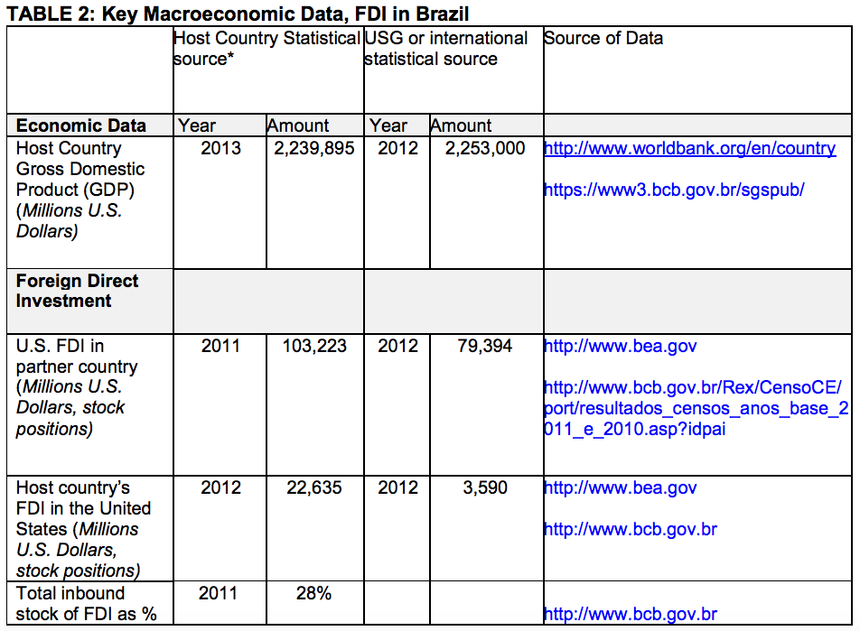
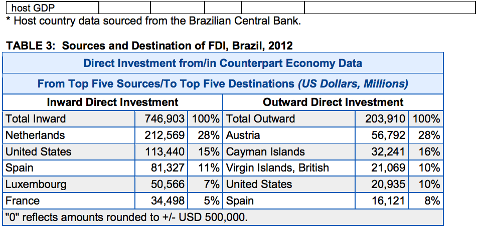
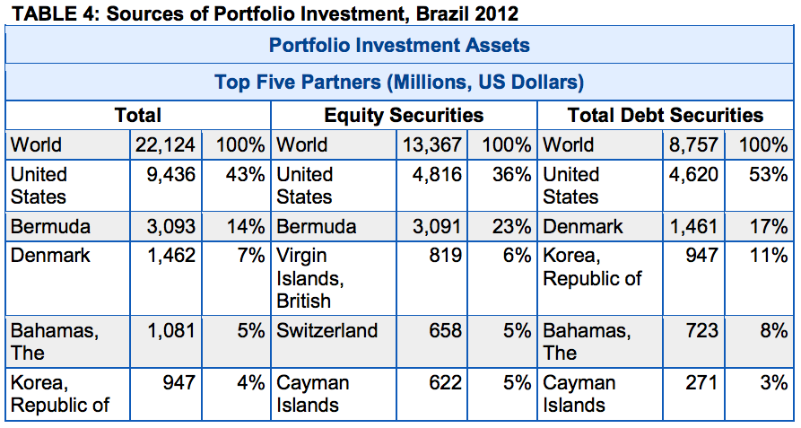

According to the Central Bank's most recent foreign-capital census (2010), the United States had the largest share of accumulated foreign-capital stock in Brazil, with 18.0 percent of the total. Spain had 14.7 percent, Belgium 8.7 percent, and Brazil 8.3 percent. Net foreign direct investment inflows between 2006 and 2011 totaled approximately USD 377 billion after subtracting depreciation and capital repatriation.
According to the UN, in 2012 Brazil was the fourth largest destination of foreign direct investment, trailing only the United States, China, and Hong Kong. The same criteria placed Brazil in fifth in 2011 and seventh in 2010.
According to data published by the Central Bank, FDI inflows to Brazil are anticipated to have reached more than USD 64 billion in 2013, a figure almost 2 percent lower than 2012. According to the U.S. Bureau of Economic Analysis, the stock of FDI from the United States in Brazil was USD 79.3 billion in 2012.
For more information on investing in Brazil, contact the Brazilian Trade and Investment Promotion Agency, ApexBrasil: http://www.apexbrasil.com.br.


